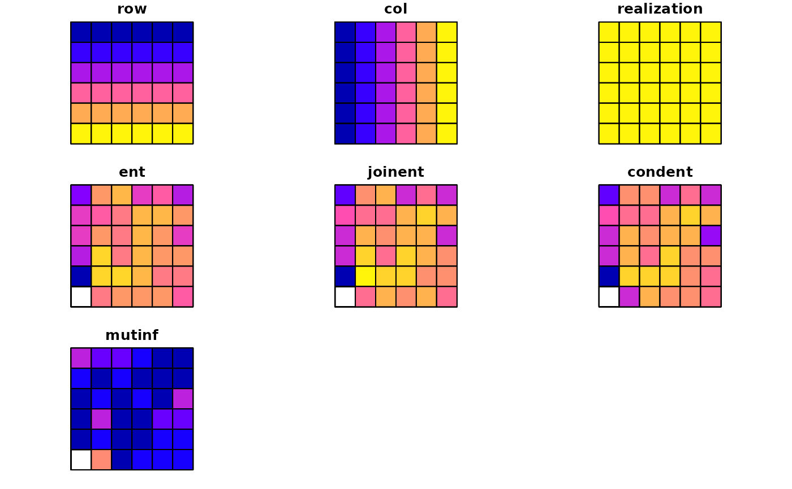

Calculates exposure matrix and quantifies it by calculating four IT-derived matrics: entropy (ent), joint entropy (joinent), conditional entropy (condent) and mutual information (mutinf). Entropy is associated with measuring racial diversity and mutual information is associated with measuring racial segregation.
calculate_metrics( x, w, neighbourhood = 4, fun, size = NULL, shift = NULL, na_action = "replace", base = "log2", ordered = TRUE, threshold = 0.5 )
| x | RasterStack with realizations |
|---|---|
| w | RasterStack with local densities |
| neighbourhood | The number of directions in which cell adjacencies are considered as neighbours: |
| fun | Function to calculate values from adjacent cells to contribute to exposure matrix, |
| size | Expressed in the numbers of cells, is a length of the side of a square-shaped block of cells. It defines the extent of a local pattern. If |
| shift | Defines the shift between adjacent squares of cells along with the N-S and W-E directions. It describes the density (resolution) of the output grid. The resolution of the output map will be reduced to the original resolution multiplied by the shift. If shift=size the input map will be divided into a grid of non-overlapping square windows. Each square window defines the extent of a local pattern. If shift < size - results in the grid of overlapping square windows. |
| na_action | Decides on how to behave in the presence of missing values in |
| base | The unit in which entropy is measured. The default is "log2", which compute entropy in "bits". |
| ordered | The type of pairs considered. Either ordered ( |
| threshold | The share of NA cells to allow metrics calculation in a square-shaped window |
a data.frame
library(raster) x = create_realizations(race_raster, n = 5) w = create_densities(x, race_raster, window_size = 10) #1 df = calculate_metrics(x, w, neighbourhood = 4, fun = "mean") #2 df2 = calculate_metrics(x, w, neighbourhood = 4, fun = "mean", size = 10, threshold = 0.5) my_grid = create_grid(x, size = 10) df3 = dplyr::filter(df2, realization == 2) result = dplyr::left_join(my_grid, df2, by = c("row", "col")) plot(result)